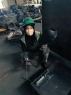
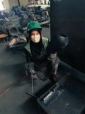

EXPERIENCE
Internship – PT. Indocement Tunggal Prakarsa Tbk.
Aug 2024 – Dec 2024
I completed my internship at PT Indocement Tunggal Prakarsa Tbk., assigned to the Electrical and Instrument Department at Plant 3/4 Citeureup.
I contributed to instrument calibration, documentation, and web-based inventory system development using PHP & MySQL. This role also gave me practical experience in HSE practices, welding techniques, and workshop operations.


 
